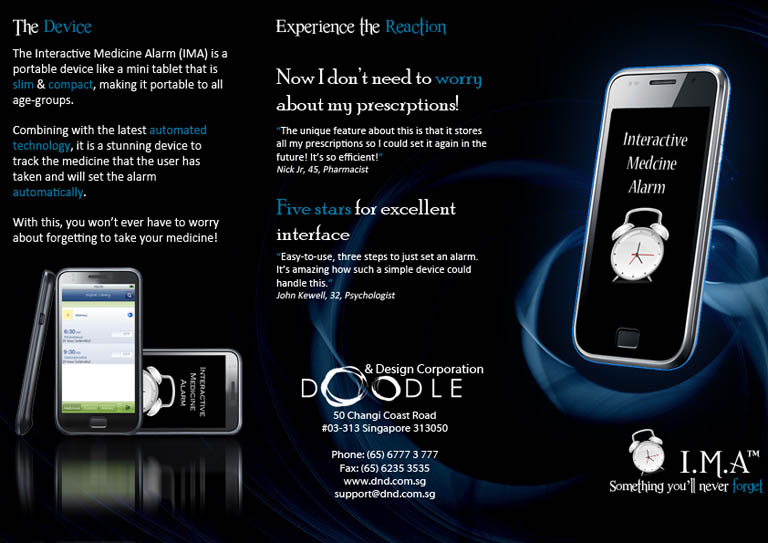

click and grab for zoom!

A brochure for my communication skills, to promote one of the ideas that I came up with to help with the elder generation. Which is a medicine alarm!
I do think it's possible now, since there's a lot of younger generations owning one of the smartphones, we could develop one though if I had the little bit extra time, I would.
So what do you think?